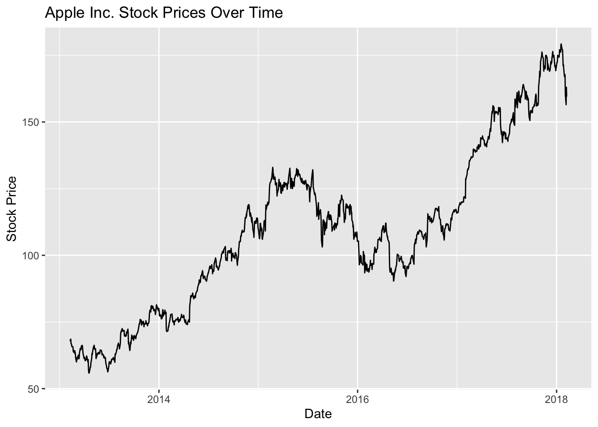
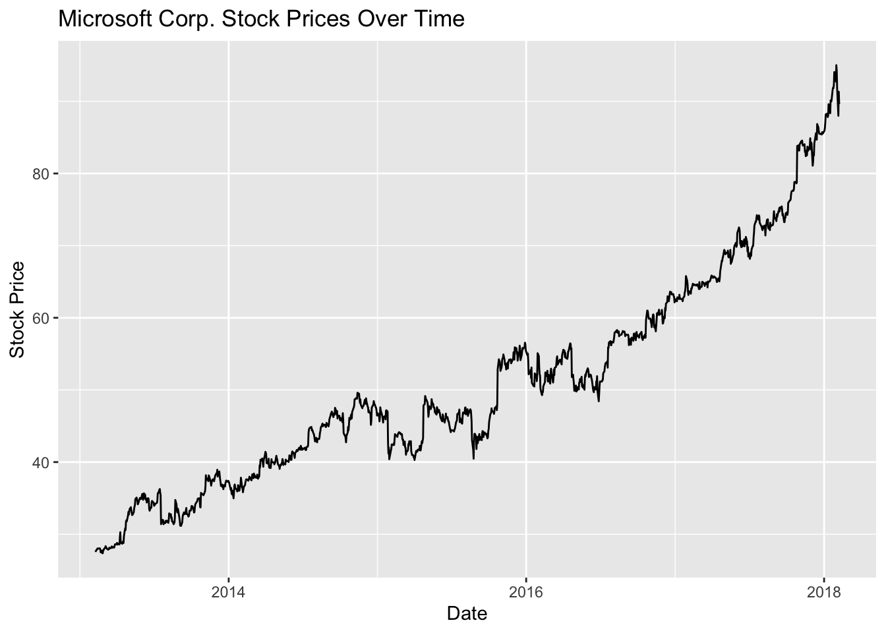

In this blog post, we will understand stock price data using the “all_stocks_5yr.csv” dataset. This dataset encompasses historical stock prices for various companies over a 5-year period. Our aim is to explore the insights and patterns in stock prices, making it a valuable experience for those who want to delve into stock market data.
library(readr)library(dplyr)
Attaching package: 'dplyr'
The following objects are masked from 'package:stats':
filter, lag
The following objects are masked from 'package:base':
intersect, setdiff, setequal, union
library(ggplot2)# Load the S&P 500 stock price datasetsp500_data <-read_csv("all_stocks_5yr.csv")
Rows: 619040 Columns: 7
── Column specification ────────────────────────────────────────────────────────
Delimiter: ","
chr (1): Name
dbl (5): open, high, low, close, volume
date (1): date
ℹ Use `spec()` to retrieve the full column specification for this data.
ℹ Specify the column types or set `show_col_types = FALSE` to quiet this message.
Now that we have loaded the dataset, let’s explore its structure and get a sense of what it contains. Let us explore the summary of this dataset below.
str(sp500_data)
spc_tbl_ [619,040 × 7] (S3: spec_tbl_df/tbl_df/tbl/data.frame)
$ date : Date[1:619040], format: "2013-02-08" "2013-02-11" ...
$ open : num [1:619040] 15.1 14.9 14.4 14.3 14.9 ...
$ high : num [1:619040] 15.1 15 14.5 14.9 15 ...
$ low : num [1:619040] 14.6 14.3 14.1 14.2 13.2 ...
$ close : num [1:619040] 14.8 14.5 14.3 14.7 14 ...
$ volume: num [1:619040] 8407500 8882000 8126000 10259500 31879900 ...
$ Name : chr [1:619040] "AAL" "AAL" "AAL" "AAL" ...
- attr(*, "spec")=
.. cols(
.. date = col_date(format = ""),
.. open = col_double(),
.. high = col_double(),
.. low = col_double(),
.. close = col_double(),
.. volume = col_double(),
.. Name = col_character()
.. )
- attr(*, "problems")=<externalptr>
# Summary statistics of the datasetsummary(sp500_data)
date open high low
Min. :2013-02-08 Min. : 1.62 Min. : 1.69 Min. : 1.50
1st Qu.:2014-05-20 1st Qu.: 40.22 1st Qu.: 40.62 1st Qu.: 39.83
Median :2015-08-21 Median : 62.59 Median : 63.15 Median : 62.02
Mean :2015-08-18 Mean : 83.02 Mean : 83.78 Mean : 82.26
3rd Qu.:2016-11-15 3rd Qu.: 94.37 3rd Qu.: 95.18 3rd Qu.: 93.54
Max. :2018-02-07 Max. :2044.00 Max. :2067.99 Max. :2035.11
NA's :11 NA's :8 NA's :8
close volume Name
Min. : 1.59 Min. : 0 Length:619040
1st Qu.: 40.24 1st Qu.: 1070320 Class :character
Median : 62.62 Median : 2082094 Mode :character
Mean : 83.04 Mean : 4321823
3rd Qu.: 94.41 3rd Qu.: 4284509
Max. :2049.00 Max. :618237630
Before we proceed further on to visualizations, I am curious as to what are the names of all these s&p 500 companies or in technical terms what are some company Fund tickers.
Now, let us look at handling missing data by removing rows with N/A’ values in them.
missing_data <- sp500_data[is.na(sp500_data$close), c("date", "Name", "close")]# Remove rows with missing data in the 'close' columnsp500_data <- sp500_data[!is.na(sp500_data$close),]
Now since the data is cleared, lets make visualisations to understand stock trends of my favourite company Apple. Apples ticker is AAPL and we hope to analyse it trend for all the years present in the dataset.
aapl_data <- sp500_data %>%filter(Name =="AAPL")# Load necessary packageslibrary(ggplot2)# Create the plotggplot(aapl_data, aes(x = date, y = close, group =1)) +geom_area(fill ="blue", alpha =0.6) +labs(title ="Apple Inc. Stock Prices",x ="Date",y ="Stock Price") +theme_minimal()

We can see that While Apple stock is on an upward trajectory overall, their shares plunged from 2015 - 2016 and then recovered eventually. After 2017 there seems a more consistent growth and finally it stablizes.
Similarly, lets look at Microsoft stock trends, which is also another big name in the industry
library(dplyr)library(ggplot2)# Filter the data for Microsoft (MSFT)msft_data <- sp500_data %>%filter(Name =="MSFT")# Create a line plot for Microsoft stockmsft_plot <-ggplot(msft_data, aes(x = date, y = close)) +geom_line() +labs(title ="Microsoft Corp. Stock Prices Over Time",x ="Date",y ="Stock Price")# Display the plotmsft_plot

Microsoft stock has seen a similar trajectory, It has just been on an upward journey but faced a little plunge around 2015. Both of these graphs show us how tech giants like AAPL and MSFT have grown over years and their stock prices have gone up significantly. These two plots help us understand their stock market presence throughout these past few years.